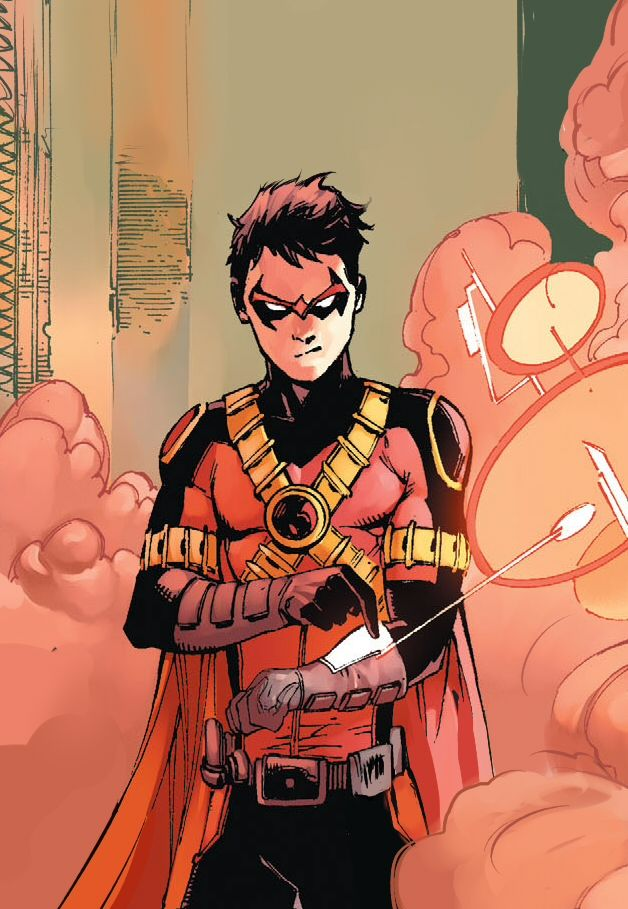

la adolescencia de Dick Grayson, conocido tambien por Robin Dick enfrenta varios conflictos, y desafios que llevan a desarrollar su propia identidad como nightwing. Su relacion con batman y su papel como mentor y padre adoptivo son centrales en la narrativa de la serie
inicio niñez adultez